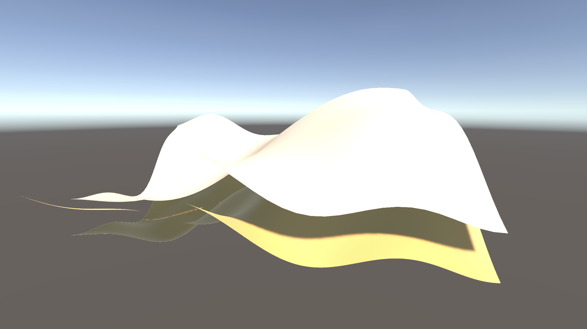

Approssimazione di Superfici mediante Patch di Coons
Corso: Computational Geometry
Autore: Zotea Dumitru — Matricola: 40654A
Università: University of Milan (UNIMI)

Descrizione:
Questo progetto presenta un’applet interattiva dedicata allo studio
dell’approssimazione di superfici mediante una decomposizione del dominio
in una griglia rettangolare di patch di Coons bilineari.
A partire da una superficie di riferimento definita su un dominio nel piano,
il sistema costruisce una superficie approssimata a tratti,
ottenuta interpolando esattamente i bordi di ciascuna cella
e ricostruendone l’interno tramite la formulazione classica delle patch di Coons.
L’obiettivo dell’applicazione non è soltanto visualizzare una superficie, ma mettere in evidenza il comportamento dell’approssimazione al variare della discretizzazione del dominio e della complessità geometrica della superficie iniziale. L’utente può confrontare in tempo reale la superficie di riferimento con la superficie approssimata, osservare l’errore numerico tramite misure globali come errore medio, errore massimo e RMSE, e analizzarne la distribuzione spaziale mediante una heatmap.
L’applet costituisce quindi uno strumento didattico per esplorare alcuni concetti fondamentali della geometria computazionale e della modellazione geometrica: interpolazione di dati di bordo, costruzione di superfici parametriche a tratti, continuità tra patch adiacenti, dipendenza dell’errore dalla discretizzazione e differenza tra interpolazione esatta sul bordo e approssimazione nell’interno.